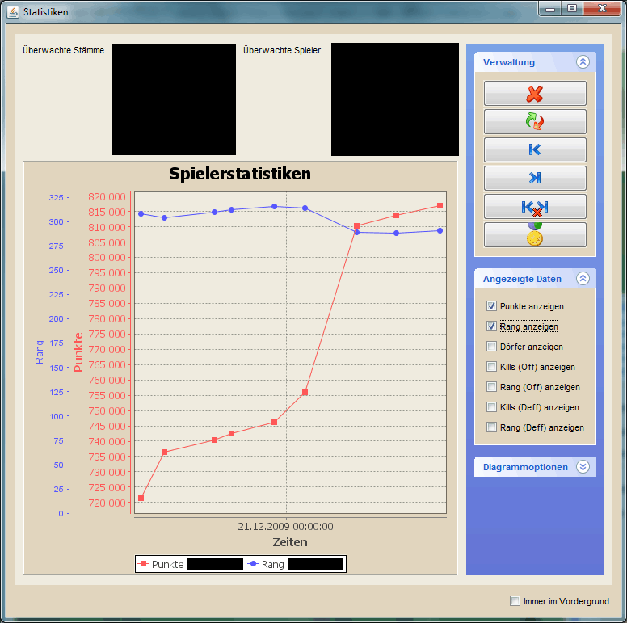
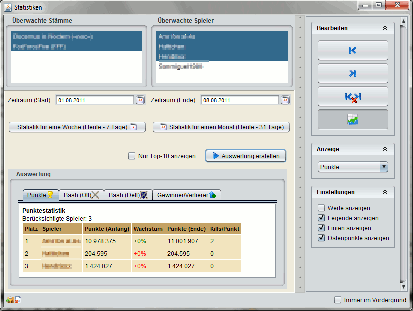

Statistiken |
|
|  | |
| In der Statistikansicht habt ihr die Möglichkeit, Statistiken zu beliebigen Spielern über einen beliebig langen Zeitraum zu erstellen und auszuwerten. Das Hinzufügen von Spielern könnt ihr über die Hauptkarte erledigen, indem ihr ein Dorf eines Spielers mit der rechten Maustaste anklickt und dann im Dorfmenü Spieler -> Spieler überwachen auswählt. Auf diesem Wege könnt ihr auch gleich alle Spieler eines Stammes hinzufügen. Daten für alle ausgewählten Stämme und Spieler werdes automatisch erfasst, sobald ihr neue Weltdaten herunterladet. Ob ihr das von dsworkbench.de oder direkt von die-stämme.de tut spielt dabei keine Rolle. Allerdings wird für jeden Tag genau ein Wert erfasst. Es macht also für die Statistiken keinen Sinn, mehrmals am Tag Live-Weltdaten von die-stämme.de herunterzuladen. Nachdem über einige Tage regelmäßig Messwerte erfasst wurden, entsteht ein Verlauf wie er im oberen Screenshot zu sehen ist. Wählt dafür einen überwachten Stamm in der oberen, linken Auswahlliste und danach einen überwachten Spieler aus der rechten Liste aus. Im Bereicht 'Angezeigte Daten' könnt ihr die Verläufe auswählen, die im Diagramm angezeigt werden sollen. Beachtet dabei, dass z.B. die Rangliste einen absteigenden Verlauf haben sollte, während die Punkte aufsteigen. Für jeden zusätzlich angezeigten Verlauf wird auf der linken Seite eine neue Y-Achse hinzugefügt. Im Bereich 'Verwaltung' auf der rechten Seite besteht darüber hinaus noch die Möglichkeit, einzelne Abschnitte in den Daten eines Spielers zu entfernen. Klickt dafür mit der linken Taste auf einen Messpunkt im Diagramm, so dass dieser markiert ist. Anschließend könnt ihr diesen Messpunkt über den dritten Button der Verwaltung als 'Startpunkt' markieren. Selbes ist mit dem vierten Button und der Markierung als 'Endpunkt' möglich. Der fünfte Button löscht alle Daten innerhalb des markierten Bereiches. Markiert ihr hingegen nur einen Startpunkt, werden alle Werte nach dem angegebenen Datum gelöscht, ist nur ein Endpunkt markiert können alle Werte vor dem Zeitpunkt entfernt werden. Im Normalfall sollte es jedoch nicht nötig sein, einzelne Messwerte zu entfernen. Der letzte Button im Bereich 'Verwaltung' ist, neben der Erfassung einer neuen Messung, am interessantesten, da man über diesen erfasste Statistiken auswerten kann, um sie z.B. im Stammesforum zu präsentieren. Diese Auswertung wird über den folgenden Dialog getätigt: |
|
|  | |
| Die Auswertung ist denkbar einfach. Oben links könnt ihr wählen, ob ihr alle Spieler des auszuwertenden Stammes, nur die Top 10 oder bestimmte, markierte Spieler betrachten wollt. Im Anschluss könnt ihr den Zeitraum der Auswertung wählen. Zur Vereinfachung gibt es dafür zwei Buttons um einen Zeitraum von 7 Tagen oder einem Monat vom aktuellen Datum ausgehend einzustellen. Im Anschluss könnt ihr noch wählen, ob BB-Codes verwendet werden sollen und schon kann die Auswertung über einen Klick auf 'Erstellen' gestartet werden. Die verfügbaren Ranglisten werden im unteren Bereich in den entsprechenden Textfeldern erstellt und können von dort ins Spiel kopiert werden. Die einzelnen Einträge und Titel sollten selbsterklärend sein, Falls es dazu Fragen gibt könnt ihr sie gern im DS Workbench Forum auf http://www.dsworkbench.de stellen. |
|
| Um durchgängige Statistiken zu erhalten ist es dringend notwendig, regelmäßig die aktuellen Daten zu erfassen. Dies muss momentan noch manuell geschehen und sollte nach jeden Weltdatendownload durchgeführt werden. Vergesst ihr es zwischendurch mal ist das kein Problem mal einen Tag auszusetzen. Einziger Nachteil ist, dass die Diagramme nicht ganz so schön aussehen. ;-) | |